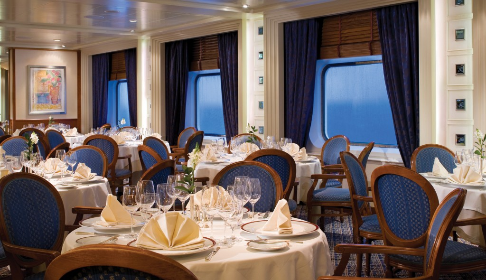

ORLANDO and WESTERN CARIBBEAN CRUISE AND STAY
Sailing onboard The Silver Sea
A cruise aboard the The Silver Sea offers you a chance to let your hair down, kick back and truly relax. Visit the Spa for some treatments ranging from the traditional to the exotic or bathe in both sun and water at the Pool. This cruise allows you to peruse original paintings by well-known artists in the onboard Art Gallery and purchase any that catch your eye. If you feel like keeping active then visit the fitness centre. Dining options are plentiful aboard the The Silver Sea with everything from steaks and seafood at the East Meets West Steakhouse to tapas from around the world at Pool Bar and Restaurant and lots more in between. And after a hard day of relaxation and fun enjoy a drink at the Panorama Lounge, where you can watch sky and sea change colours as the sun sets.
Pool Bar

Panorama Lounge

Restaurant
Spa
Day 1 - Port Canaveral, Florida
Located on the Atlantic, on Florida’s Space Coast, and within minutes of a thrilling space shuttle launch for the luckiest of visitors.
Day 2 - At sea
Day 3 - Labadee, Haiti
Haiti is a mountainous island, blanketed in tropical foliage and exotic vegetation
Day 4 - Falmouth, Jamaica
Palm trees quietly move to the rhythms of sea breezes that come in from the Caribbean, creating an idyllic backdrop for relaxation
Day 5 - George Town, Grand Cayman
At Stingray City, you can snorkel, scuba dive, or hand feed friendly stingrays, while tours by submarine or glassbottomed boat are fun ways to see the harbour and sea life.
Day 6 - Cozumel, Mexico
Glass-clear waters around coral reefs off er you a world-class encounter with majestic eagle rays and more, while the isle centre is home to hosts of brightly-hued tropical birds.
Day 7 - At sea
Day 8 - Port Canaveral, Florida
Included in this cruise
- Spacious suites - over 85% with private verandas
- Personalised service - nearly one crew member for every guest
- Butler service in every suite - all guests are pampered equally
- Open-seating dining options - dine when and with whomever you please
- Diversity of dining venues - casual, romantic, regional delicacies, and gourmet cuisine inspired by Relais and Chateaux
- Beverages in-suite and throughout the ship - select wines, premium spirits, specialty coffees and soft drinks, plus your own tailored mini-bar
- In-suite dining and 24-hour room service - always complimentary, always available
- Sophisticated entertainment from live music to production shows
- Enrichment lecturers, acclaimed chefs and destination consultants
- Complimentary transportation into town in most ports
- Gratuities always included in your fare
- Free WiFi throughout the ship; unlimited in select suite categories
Hotel Stay Rosen Inn at Pointe Orlando
Includes: Return Flights from Dublin, 7 Night Room Only Stay at The Rosen Inn at Pointe Orlando, 7 Night Full Board Cruise onboard Freedom of The Seas
Prices from EURO 1375pp
Departure Dates and Sailings - 7 Night Eastern and Western Caribbean departing between Jan - Dec 2016.